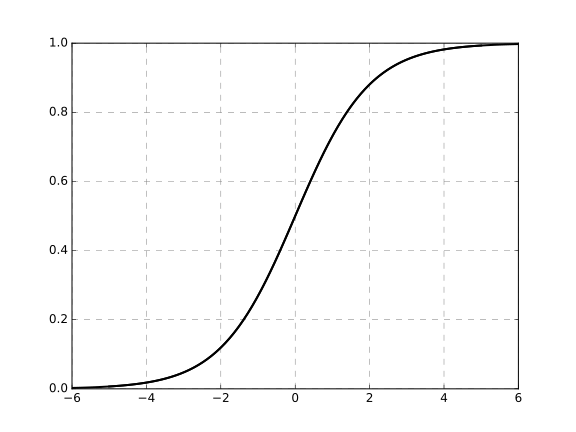
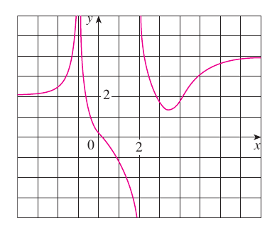

2.6 - Limits at Infinity; Horizontal Asymptotes
Let $f(x) = \frac{1}{1+e^{-x}}$. What happens when $x \to \infty$? When $x \to -\infty$?

If we can make $f(x)$ as close as we want to some value $L$ by making $x$ sufficiently large, we say:
$$
\lim_{x \to \infty} f(x) = L
$$
Limits as $x \to -\infty$ are defined analogously.
If $\lim_{x \to \infty} f(x) = L$ (or if $\lim_{x \to -\infty} f(x) = L$, the line, $y=L$, called a horizontal asymptote of $f(x)$.
Find all the horizontal and vertical asymptotes of the graph:

If $r \gt 0$ is a rational number, then $$\lim_{x \to \infty} \frac{1}{x^r} = 0$$. If $x \gt 0$
If $\frac{1}{x^r}$ is defined for negative values, then $$\lim_{x \to -\infty} \frac{1}{x^r} = 0$$